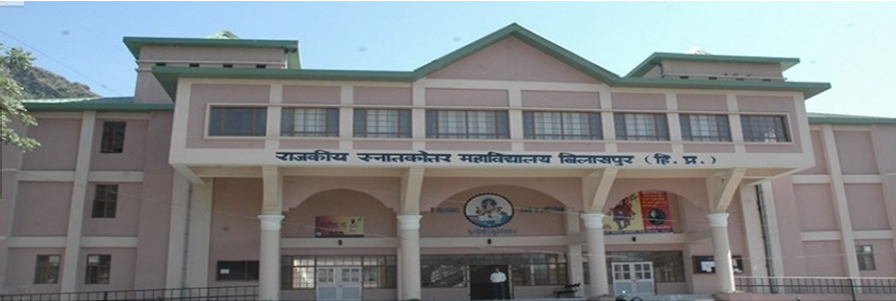
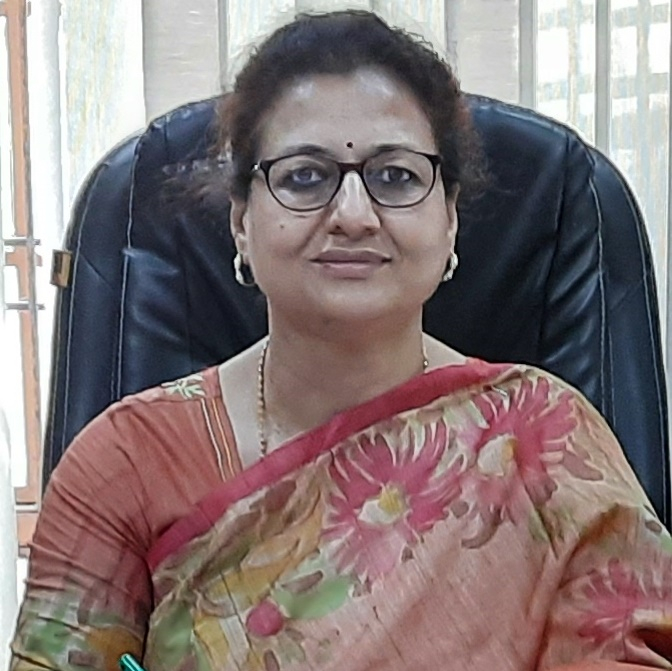

GPGC Bilaspur
Email - principalgpgcbilaspur@gmail.com


Principal's Message
Greetings to all!
An educational institution has immense responsibility of shaping the future citizens of the world. It plays a key role in the overall development of the society. The role of education is definitely not limited to giving and grasping knowledge and theory. The true goal of education transcends much beyond just awarding degree and certificate to the students. As Mahatma Gandhi said,” By Education, I mean an all-round drawing out of the best in child and man-body mind and spirit”. The ultimate goal of education is the discovery of the meaning of life and the fulfillments of life and all mankind as well as for oneself. The quest for education is knowledge, humanity, culture, wisdom and sharpness but it should be noted that knowledge is not given but earned and character is not granted but cultivated.
GC Bilaspur not only focuses on theoretical curriculum, but also helps in the development of a students’ personality, extra-curricular activities and over all perspective. Everything that makes a good institution are-a highly trained faculty, rich library, placement division, teaching methods, liberty to think and express themselves – we have it here. The objective of higher education in rural area is associated with employment – as it ensures a positive attitude to see the universe from better angle and to analyse, determine and apply an individual ‘s idea in a constructive development of society.
I firmly believe that GC Bilaspur is more than just a place to learn. It gives you a chance to grow by equipping with everything you need to achieve excellence .We ensure that students get the best start to their future career to become smart and responsible citizens of the country.MOTTO:
Tamso Ma Jyotirgamya
VISION & MISSION
(Lead me from darkness to light)
VISION:
To be an academic institution in dynamic equilibrium with its motive to empower students in social, ecological and value based environment.
MISSION:
To foster quality education for youngsters by promoting a learning environment that promotes employability and sensitivity towards the society:
– To develop entrepreneurial and managerial skills in the students to compete in the globalised world.
– To promote ethical and responsible behaviour in the students to achieve sustainable development.
– To promote a dynamic, transparent and decentralized governance in the institution.
Greetings to all!
An educational institution has immense responsibility of shaping the future citizens of the world. It plays a key role in the overall development of the society. The role of education is definitely not limited to giving and grasping knowledge and theory. The true goal of education transcends much beyond just awarding degree and certificate to the students. As Mahatma Gandhi said,” By Education, I mean an all-round drawing out of the best in child and man-body mind and spirit”. The ultimate goal of education is the discovery of the meaning of life and the fulfillments of life and all mankind as well as for oneself. The quest for education is knowledge, humanity, culture, wisdom and sharpness but it should be noted that knowledge is not given but earned and character is not granted but cultivated.
GC Bilaspur not only focuses on theoretical curriculum, but also helps in the development of a students’ personality, extra-curricular activities and over all perspective. Everything that makes a good institution are-a highly trained faculty, rich library, placement division, teaching methods, liberty to think and express themselves – we have it here. The objective of higher education in rural area is associated with employment – as it ensures a positive attitude to see the universe from better angle and to analyse, determine and apply an individual ‘s idea in a constructive development of society.
I firmly believe that GC Bilaspur is more than just a place to learn. It gives you a chance to grow by equipping with everything you need to achieve excellence .We ensure that students get the best start to their future career to become smart and responsible citizens of the country.